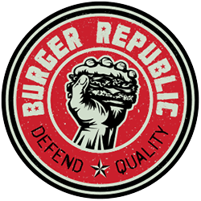

Andrew Royer

Summary
Detail-oriented and customer focused with 10+ years in customer facing roles. Seeking
to bring a hard-working attitude and adaptability to a development role and flex new
skills in tech.
Education
Middle Tennessee State University 2021-2023
Bachelors of Science - Professional Studies-Information Technology
Interdisciplinary degree program with a focus on management and information technology
Jackson High School 2004-2008
General Studies with Honors
Work Experience
Culinary Manager - Burger Republic
February 2014-Present
Burger Republic
- Tracked employee performance and certifications
- Managed menu changes and ServeSafe compliance
- Designed and implemented best practices for QA and P&L
- Inventory, cost, and payroll management
- Analyzed sales trends to maximize product use
Shift Supervisor - Starbucks
September 2009-December 2014
Starbucks
- Managed day to day operations of high volume store
- Oversaw inventory procedures - head of purchasing
- Maintained training standards and procedures for all partners
Skills Overview
Soft Skills
- Customer Service
- Communication
- Dependable/Punctual
- Flexible
Hard Skills
- Working knowledge of OOP
- Intermediate C# application development
- Intermediate HTML web development
- Familiarity with IT and CS concepts
Hobbies
- Cooking
- Playing drums
- Exploring cultures
- Learning new skills
- Ice hockey
- Traveling
Contact